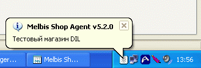
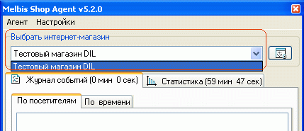
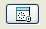

Melbis Shop Agent предназначен для отслеживания событий: входа посетителя в магазин, помещения товара в корзину, оформления и изменения заказа, а также для отображения различных накопленных на сервере статистических данных о посещаемости интернет магазина.
При запуске агента (файл MAgent.exe) кратковременно появляется окно программы Melbis Shop Agent, затем окно сворачивается (если в настройках программы задана опция "Сворачивать программу при запуске"), в трее остается значок программы, появляется всплывающая подсказка, свидетельствующая об успешном запуске программы Melbis Shop Agent и указывающая наименование магазина, который она мониторит.

При работе с несколькими магазинами, выбор магазина осуществляется в главном окне программы:

Кнопка

служит для принудительного обновления данных
Работа программы Melbis Shop Agent возможна при наличии связи с сервером.